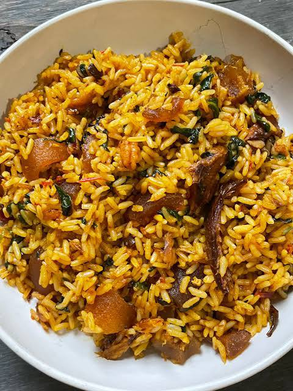

How to make Nigerian Native Rice (Palm Oil Rice)
Your number 1 cook book in africa
INGREDIENTS
For the meats:
2kg goat meat½ Small onion
1 knorr beef seasoning
1 teaspoon salt
1 cup water
To cook the rice
4 cups of washed rice1 teaspoon salt
1 cup of meat stock
2 cups of water
For the pepper mix
3 bell peppers4-5 scotch bonnet peppers as much as you can handle
1 small onion
Pepper sauce
oil for frying½ cup pepper mix bell pepper,atarodo and onion
pinch of salt
¼ teaspoon onion powder
¼ teaspoon beef seasoning
For the rice
2 Medium dried smoked catfish½ cup dried pawns
¼ cup palm oil
¼ cup iru
2 tablespoons crayfish
½ teaspoons salt
½ teaspoon beer knorr bouillon cube
½ bunch of kale
INSTRUCTIONS
Season the cleaned goat meat chunks with chopped onions,bouillon cubes, and salt.
Add litte water and mix well,cover and steam on low heat for 15-20 minutes or untill the meat is tender.
Add more water if needed,strain the goat meat stock to remove any bones.
Add the washed rice to the goat meat stock.
Add salt and more water as needed,Mix well,cover,and cook for 20-25 minutes until the rice is tender.
once cooked,fluff the rice with a fork to release steam,then set aside.
prepare the pepper mix by roughly blending peppers and onions using a chopper,food processor,or blender,set it.
Soak the smoked catfis in hot water for 20 minutes,ensuring it is fully submerged.
in a seperate bowl,wash the dried prawns with hot water,then drain and set aside.
Discard the hot water from the catfish,debone thorougly,and if still hard,soak in hot water for an additional 10-20 minutes or until soft.
Heat up some red palm oil in a wide pan over medium heat.
Add chopped onions,iru and crayfish powder,fry for 2-3 minutes untill the onions are soft
Add half of the prepared pepper mix and stir well,season with salt and bouillon cubes.
fry the pepper mix for 5-10 minutes or until it darkens slightly,stirring occasionally.
Add the deboned catfish and prawns,then stir-fry for 1-2 minutes.
Cover and cook for 5 minutes on low-medium heat.
Add the cooked rice and mix until well combined,stir-fry for 5 minutes to toast the rice.
Add sliced vegetables and mix thorougly once mixed,set aside.
In a large pan,heat up some oil over medium heat,add the goat meat and fry until crispy.
Transfer the fried meat to a paper towel to drain excess oil.
Reduce the oil in the pan,then add the remaining pepper mix,add extra pepperd if you want it extra spicy.
Season with salt,onion powder,and a beef bouillon cube,mix and fry for 3-4 minutes.
Add the fried goat meat to the pepper mix and stir until well combined,Add a little water,cover and steam for 5 minutes.
serve.
Enjoy your native jollof rice with a spicy peppered meat.